完成写真
この版の写真は準備中です。
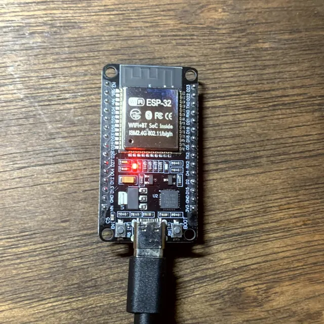
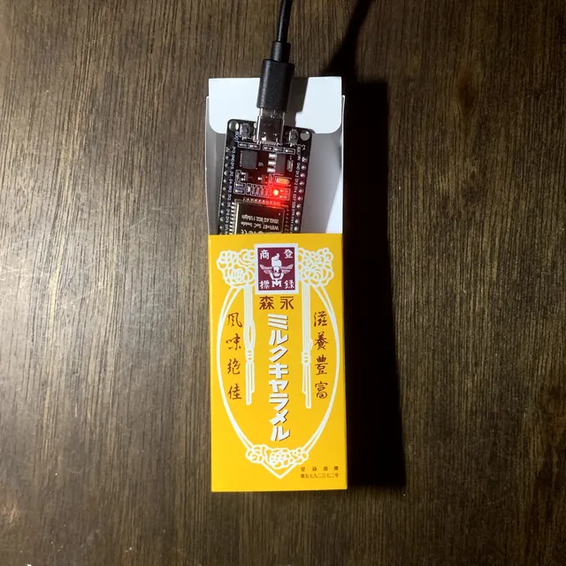
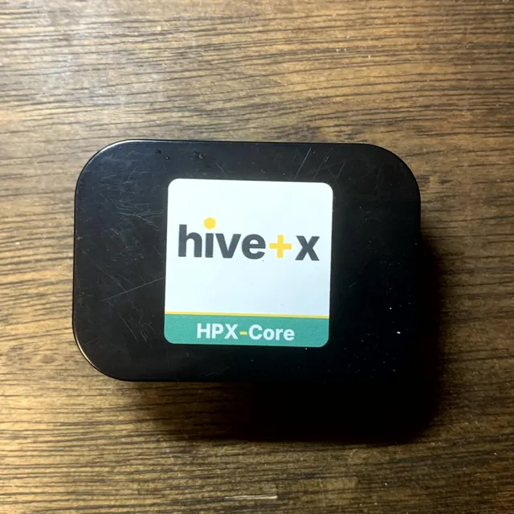
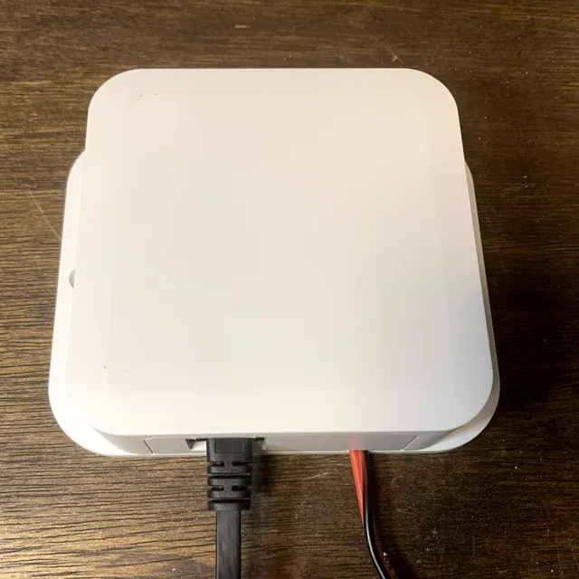
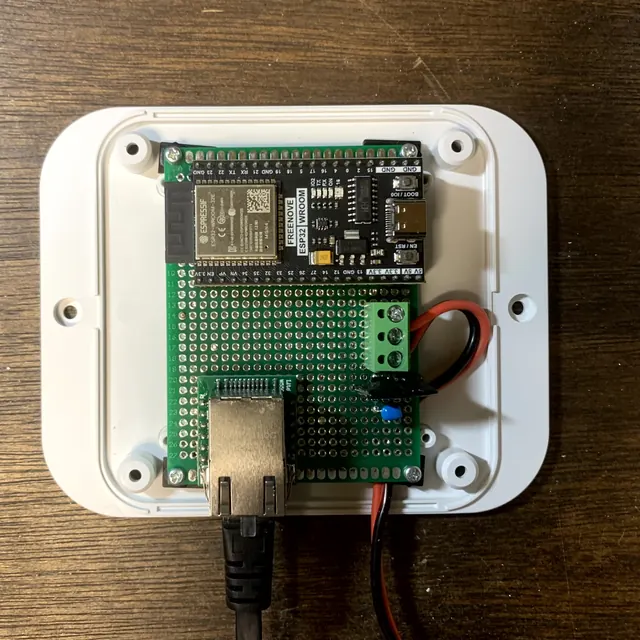
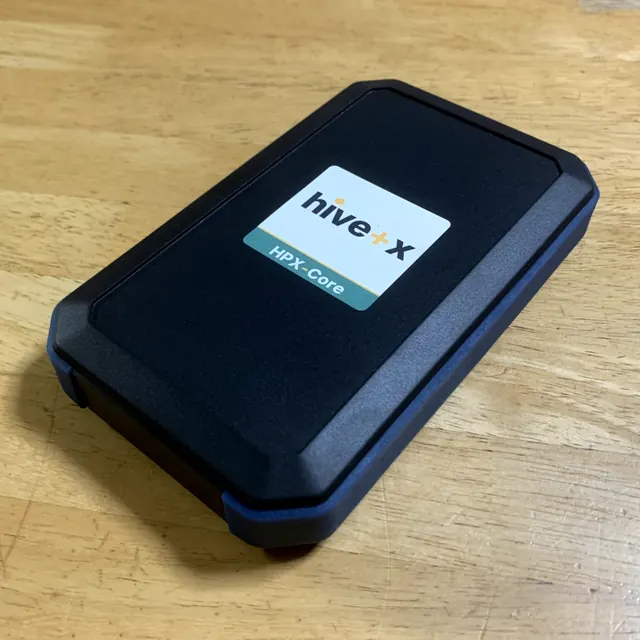
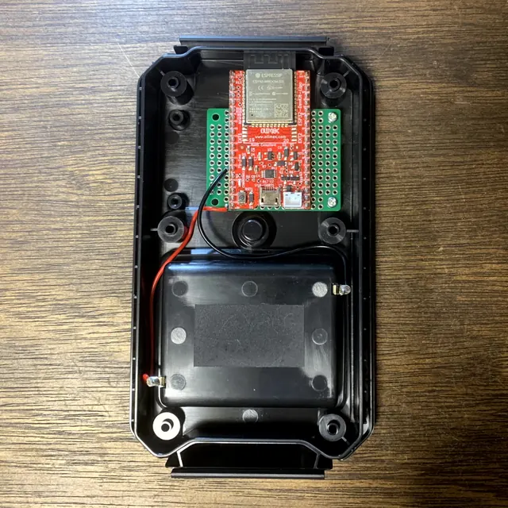
ハブ
部品表
基本モデルに必要な部品と数です。
| 部品 | 数 |
|---|---|
| チップボード | |
| ESP-32ボードELEGOO ESP-32 開発ボード WROOM-32 (1,200円）Freenove ESP32 開発ボード（1,400円）Olimex ESP32-DEVKIT-LIPO（1,700円）：省電力、micro-USB接続DFRobot FireBeetle 2 ESP32-E（1,900円）：省電力 | 1 |
| 電子部品 | |
| ピンソケット（メス）分割ロングピンソケット 1×42 (42P) （80円 / 42PIN） | 15PIN×2 |
| ケース関係 | |
| 小型IoTプラスチックケース SICシリーズSIC5-7-3B （289円） | 1 |
| 低価格ユニバーサル基板 PCBシリーズPCB32-53 （139円） | 1 |
| 基板固定用タッピングビス EMシリーズEM-1.6 （319円 / 50個） | 4 |
| 部品代の目安 (1台分) | 約 1,711円 |
ソーラーシステム版に必要な部品と数です。
| 部品 | 数 |
|---|---|
| チップボード | |
| ESP-32ボードELEGOO ESP-32 開発ボード WROOM-32 (1,200円）Freenove ESP32 開発ボード（1,400円）Olimex ESP32-DEVKIT-LIPO（1,700円）：省電力、micro-USB接続DFRobot FireBeetle 2 ESP32-E（1,900円）：省電力 | 1 |
| 電子部品 | |
| 有線LANモジュール W5500ACEIRMC W5500 イーサネットネットワークモジュール （2,999円 / 3個入り） | 1 |
| コンデンサー0.1μF積層セラミックコンデンサー 0.1μF50V C0G 5mm （250円 / 10個入り） | 2 |
| ピンソケット（メス）分割ロングピンソケット 1×42 (42P) （80円 / 42PIN） | 20PIN×2・6PIN×2 |
| ジャンパー線スズメッキ軟銅線 TCW 0.5mm 10m （670円 / 10m） | 適宜 |
| コンデンサー 10μF積層セラミックコンデンサー 10μF50V X7S 5mm (BP5293-50 の入力側) （60円） | 1 |
| 抵抗 100kΩ小型 金属皮膜抵抗 1/4W100kΩ （300円 / 100本入り） | 2 |
| 端子台 3極基板用ねじ式端子台 3P 5.08mm ターミナルブロック 3P 緑 縦 （40円） | 1 |
| 抵抗 15kΩ小型 金属皮膜抵抗 1/4W15kΩ （300円 / 100本入り） | 1 |
| 抵抗 8.2kΩ小型 金属皮膜抵抗 1/2WS 8.2kΩ （300円 / 100本入り） | 1 |
| 電源 | |
| 三端子DCDCレギュレーター 5VROHM BP5293-50 (入力 7〜26V、出力 5V 1A) （240円） | 1 |
| ケース関係 | |
| 壁付ネットワークケース PFFシリーズタカチ PFF10-4-10W （639円） | 1 |
| ユニバーサル基板 6×8cmユニバーサル基板 6×8cm （695円 / 5枚入り） | 1 |
| 基板スペーサー ナット入り貼付スペーサー ASTシリーズタカチ AST2.5-5B （219円） | 1 |
| ケーブル | |
| ミニ平型ヒューズホルダーエーモン ミニ平型ヒューズホルダー (線の途中に入れる) （415円） | 2 |
| ミニ平型ヒューズ 1Aミニ平型ヒューズ 1A (ARISELIFT) （567円 / 5個入り） | 2 |
| 電線 0.3〜0.5mm²サンコー電商 AWG20 【6色】 UL1015 耐熱ビニル絶縁電線 (コントローラーの端子から端子台まで) （980円） | 適宜 |
| 部品代の目安 (1台分) | 約 4,754円 |
電池版に必要な部品と数です。
| 部品 | 数 |
|---|---|
| チップボード | |
| FireBeetle 2 ESP32-E IoT開発ボードDFRobot DFR0654 （1,900円）代わりに: Olimex ESP32-DEVKIT-LIPO（1,700円）：micro-USB接続代わりに: Freenove ESP32 開発ボード（1,400円）：省電力に向かないので家庭電源向き代わりに: ELEGOO ESP-32 開発ボード（1,200円）：省電力に向かないので家庭電源向き | 1 |
| 電子部品 | |
| ピンソケット（メス）シングルピンソケット (低メス) （80円 / 20PIN） | 17PIN×1・14PIN×1 |
| ジャンパー線スズメッキ軟銅線 TCW 0.5mm 10m （670円 / 10m） | 適宜 |
| 電源 | |
| 単三リチウム電池エナジャイザー リチウム乾電池 単3形 4本入り （1,283円 / 4本入り） | 3 |
| ケース | |
| IP67防水ハンドヘルドケース 単3×3電池ボックス付きタカチ WH145-25-M3-BR （2,205円） | 1 |
| ケース用基板 | |
| WH145-25-M3用基板タカチ PCB36-47 （139円） | 1 |
| 部材 | |
| 基板スペーサー ナット入り貼付スペーサー ASTシリーズタカチ AST2.5-5B （219円） | 1 |
| 部品代の目安 (1台分) | 約 5,549円 |
LTE-M版に必要な部品と数です。
作り方
図を押すと、大きな画像が開きます。どの図もまだ実物で組んで確かめていません。取付穴の位置は目安なので、部品と基板の実物で確かめてから組み立ててください。
USB Type-Cを接続するので、用いるケースに穴あけ加工が必要です。
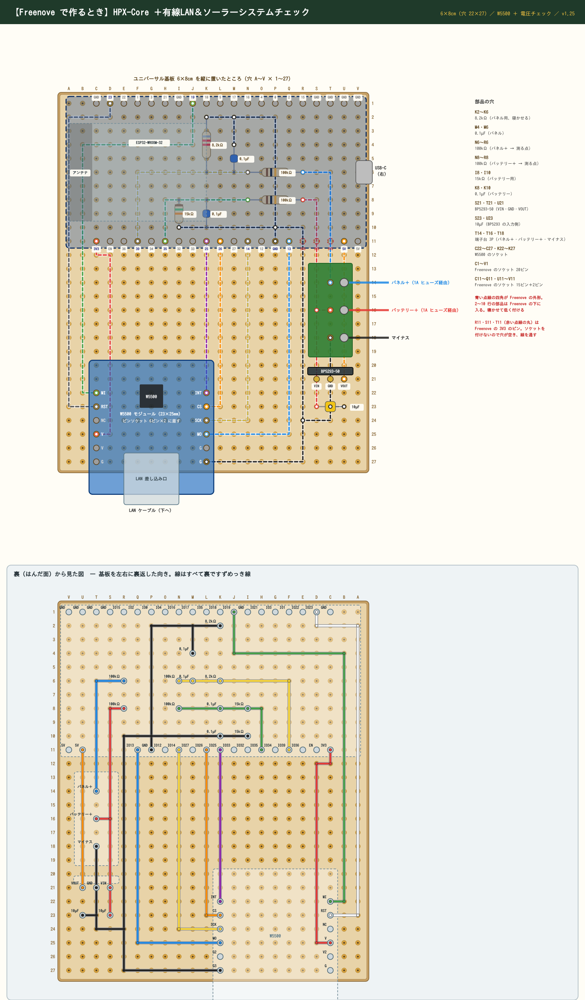
つなぐ線（穴の位置は 列の文字＋行の数字）
| 線 | どこから（穴） | 通る穴 | どこへ（穴） |
|---|---|---|---|
| 紫 | IO25（K11） | K11 → K22 | W5500 INT（K22） |
| 橙 | IO26（L11） | L11 → L23 → K23 | W5500 CS（K23） |
| 黄 | IO14・SCK（N11） | N11 → N24 → K24 | W5500 SCK（K24） |
| 青 | IO13・MOSI（Q11） | Q11 → Q25 → K25 | W5500 MO（K25） |
| 緑 | IO19・MISO（J1） | J1 → J4 → B4 → B22 → C22 | W5500 MI（C22） |
| 白 | IO23（D1） | D1 → D2 → A2 → A23 → C23 | W5500 RST（C23） |
| 赤 | 3V3（C11） | C11 → C12 → D12 → D25 → C25 | W5500 V（C25） |
| 黒 | GND（P11） | P11 → P10 → P2 → M2 → K2 | 0.1µF の線（M2）・8.2kΩ（K2） |
| 黒 | 0.1µF（M4） | M4 → M2 | GND の線（M2） |
| 黒 | （とちゅうの P10） | P10 → K10 → I10 | 0.1µF（K10）・15kΩ（I10） |
| 黒 | （とちゅうの P10） | P10 → R10 → R24 | R11 の空いた穴を通って下へ |
| 黒 | （とちゅうの R24） | R24 → R27 → K27 | W5500 G3（K27） |
| 黒 | 端子台 マイナス（T18） | T18 → T21 → T23 → T24 → R24 | BP5293 GND（T21）・GND の線（R24） |
| 黒 | 10µF（U23） | U23 → T23 | GND の線（T23） |
| 黄 | IO39（F11） | F11 → F6 → K6 → M6 → N6 | 8.2kΩ（K6）・0.1µF（M6）・100kΩ（N6） |
| 緑 | IO35（H11） | H11 → H8 → I8 → K8 → N8 | 15kΩ（I8）・0.1µF（K8）・100kΩ（N8） |
| 青 | 端子台 パネル＋（T14） | T14 → T6 → R6 | 100kΩ（R6、T11 の空いた穴を通る） |
| 赤 | 端子台 バッテリー＋（T16） | T16 → S16 | バッテリー＋の線（S16） |
| 赤 | 10µF（S23） | S23 → S21 → S16 → S8 → R8 | BP5293 VIN（S21）・100kΩ（R8、S11 の空いた穴を通る） |
| 橙 | 5V（U11） | U11 → U21 | BP5293 VOUT（U21） |
部品の置き場所
| 部品 | 数 | 置き場所・メモ |
|---|---|---|
| Freenove ESP32 WROOM（FNK0090、ピンヘッダ付き） | 1 | C1〜V1・C11〜V11。横に寝かせて、アンテナを左・USB-C を右の端に向ける |
| ピンソケット（メス）20ピン | 2 | 上の列 C1〜V1 は 20ピンのまま。下の列は 15ピン（C11〜Q11）と 2ピン（U11・V11）に切る |
| W5500 イーサネットモジュール ＋ ピンソケット 6ピン×2 | 1 | C22〜C27・K22〜K27。LAN 差し込み口を下に向ける（基板の下の端から 2穴ぶんくらいはみ出す） |
| 三端子 DCDC レギュレーター ROHM BP5293-50（入力 7〜26V、5V 1A） | 1 | S21・T21・U21（左から VIN・GND・VOUT。印字面を手前（下）に向けて立てる） |
| 積層セラミックコンデンサー 10µF 50V 5mm | 1 | S23・U23（BP5293 の入力側） |
| 金属皮膜抵抗 100kΩ 1% | 2 | N6〜R6（パネル用）、N8〜R8（バッテリー用）。寝かせて付ける |
| 金属皮膜抵抗 15kΩ 1%（小型 1/4W） | 1 | I8・I10（バッテリー用。足の間 2穴で寝かせる） |
| 金属皮膜抵抗 8.2kΩ 1% | 1 | K2〜K6（パネル用、寝かせる） |
| 積層セラミックコンデンサー 0.1µF 50V 5mm | 2 | M4・M6（パネル用）、K8・K10（バッテリー用） |
| 基板用ねじ式端子台 3P 5.08mm（緑・縦） | 1 | T14・T16・T18（上から パネル＋・バッテリー＋・マイナス）。線は上から差す |
| ミニ平型ヒューズホルダー ＋ 1A ミニ平型ヒューズ | 2 | バッテリー＋とパネル＋の線の途中（コントローラーの近く） |
| ユニバーサル基板 6×8cm（穴 22×27）・すずめっき線 | 1 | 縦に置く。線はすべて裏 |
注意
- 上の図は部品を載せる面（表）から見たところ。部品はすべて表から差し、足を裏ではんだ付けする。線はすべて裏のすずめっき線（下の「裏から見た図」が実際に配線する向き）。
- Freenove は横に寝かせて上の端に差す（アンテナが左、USB-C が右の端）。図の点線の四角が Freenove の外形で、2〜10 行の部品（抵抗 4本・0.1µF 2個）はその下に入る。
- Freenove の下の部品は、ソケットより先にはんだ付けし、基板にぴったり寝かせて低く付ける。ソケット（約 8.5mm）とピンヘッダの台（約 2.5mm）で、すき間は 1cm くらいの見込み（未確認）。
- Freenove の下の列のソケットは、15ピン（C11〜Q11）と 2ピン（U11・V11）に切って付ける。R11・S11・T11（使わない 3V3 のピン）はソケットに入らず浮く。空いた穴に GND・バッテリー＋・パネル＋の線を通すため。
- W5500（23×25mm）は C・K 列の 22〜27 行（TARO 2026-11-22: 基板の下の端へ）。W5500 の基板は 19.6 行くらいから、LAN 差し込み口のある側は 6×8cm 基板の下の端から 5mm くらいはみ出す見込み。GND は右の列の G3（K27）につなぐ。
- 外からの 3本の線は、基板用ねじ式端子台 3P 5.08mm（緑・縦）の T14・T16・T18（上から パネル＋・バッテリー＋・マイナス）に入れる。線を上から差し、ねじは右から締める。端子台の上の端は 12.6 行くらいで、Freenove の下の端（11.5 行くらい）とすき間 3mm ほどの見込み（端子台の寸法は買う品の資料で確かめる）。
- 開発ボードの電源は USB ではなく、バッテリーから BP5293-50 で作った 5V を 5V ピン（U11）に入れる。
- バッテリーは 100kΩ と 15kΩ で 約1/7.7 にして IO35 で、パネルは 100kΩ と 8.2kΩ で 約1/13 にして IO39 で読む（ファーム v1.25）。
- W5500 の信号は FireBeetle の図と同じピン: INT＝IO25、CS＝IO26、SCK＝IO14、MOSI＝IO13、MISO＝IO19、RST＝IO23。
- BP5293-50 は左から VIN・GND・VOUT（FireBeetle・Olimex の図とは左右が逆。印字面を手前（下）に向ける）。足の並びは秋月の資料（データシート）で確かめてから差す。入力は 26V まで。
- USB-C で書き込むときは、バッテリー＋の線のヒューズを抜く（5V ピンにバッテリーからの 5V が来ているため）。
- マイナスはコントローラーの「バッテリー−」へ。「パネル−」にはつながない。
- パネル電圧は「パネル−」と「バッテリー−」がつながっている（マイナス共通）コントローラーでだけ測れる。「パネル＋」と「バッテリー＋」がつながっている（プラス共通）コントローラーでは、パネル＋の線（端子台 T14）をつながない（パネル用の抵抗・コンデンサーとヒューズは省いてよい）。つながないとパネルは 0V になり「未接続」として扱う。どちらの型かは、コントローラーの線を外してテスターの導通モードで確かめる。
- Freenove のピンの並びは Freenove の GitHub のピン配置図から。左右のピン列は 10穴はなれていると見込んで描いた（実物で未確認）。差す前に、基板の印字とピンの名前を見くらべる。
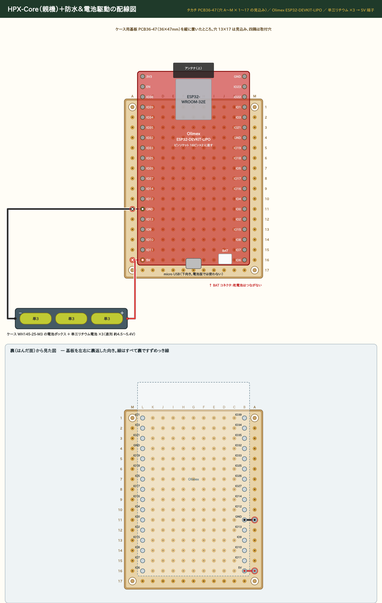
ほかの開発ボードで作るときの図: Olimex ESP32-DEVKIT-LIPO、Freenove ESP32 WROOM (FNK0090)、ELEGOO ESP-32
つなぐ線（穴の位置は 列の文字＋行の数字）
| 線 | どこから（穴） | どこへ（穴） | 役目 |
|---|---|---|---|
| 赤 | 電池ボックスの＋の線（A14 に直接はんだ付け） | 裏で A14 → B14（FireBeetle の VCC、左の列のいちばん下） | 電池の＋を VCC へ |
| 黒 | 電池ボックスの−の線（A12 に直接はんだ付け） | 裏で A12 → B12（FireBeetle の GND、左の列の下から3本目） | 電池の−を GND へ |
部品の置き場所
| 部品 | 数 | 置き場所・メモ |
|---|---|---|
| DFRobot FireBeetle 2 ESP32-E（DFR0654、ピンヘッダ付き） | 1 | B1〜B14・K1〜K17 のソケットに差す。USB-C を下に向ける |
| ピンソケット（メス）17ピン・14ピン | 各1 | K1〜K17、B1〜B14 にはんだ付け。右の列の 18本目（RST）は基板の外 |
| ケース WH145-25-M3-BR（単3×3 電池ボックス付き）／ 単三リチウム電池 | 1／3 | ＋の線を A14、−の線を A12 にはんだ付け |
| ケース用基板 PCB36-47・基板スペーサー AST2.5-5B・すずめっき線 | 1 | 線は裏の2本だけ |
注意
- 上の図は部品を載せる面（表）から見たところ。ピンソケットは表から差し、足を裏ではんだ付けする。下の「裏から見た図」が実際に配線する向き（左右が逆）。
- 電池は FireBeetle の「VCC」（左の列のいちばん下）と「GND」へつなぐ。電池コネクタ（PH2.0）は充電式リチウムイオン電池用なので、乾電池は絶対につながない。
- 電池を入れたまま USB-C をつながない（書き込みは電池を外してから）。
- 新品の単三リチウム3本は約5.4V。VCC の先の 3.3V を作る部品（RT9080）の入力の上限は 5.5V と覚えているが、資料ではまだ確かめていない。余裕は少ない。
- VCC に電池をつなぐと、基板の中のスイッチを通って電池コネクタ（PH2.0）と IO34 の抵抗（1/2 にする）にも電池の電圧がかかる（回路図から）。IO34 で電池の電圧を読めるかもしれない（ファームはまだ使っていない）。
- FireBeetle は長さ 60mm で基板（47mm）より長い。上の端は約2mm、USB-C の側は約11mm 基板からはみ出す。ケースに収まるかは未確認。
- PCB36-47 の穴の数（13×17）は見込み。ケースの深さ（内寸13mm の見込み）に、スペーサー5mm＋基板＋ソケット＋FireBeetle が収まるかも未確認。足りないときはソケットを使わずに直接はんだ付けする。
- 眠っている間の電流を減らすには、FireBeetle の裏の「低消費電力パッド」を切る（約0.5mA 減る。切ると電源の LED が消える）。
- 管理画面の動作モードは「ディープスリープ」にする。電池のもちは未実測。
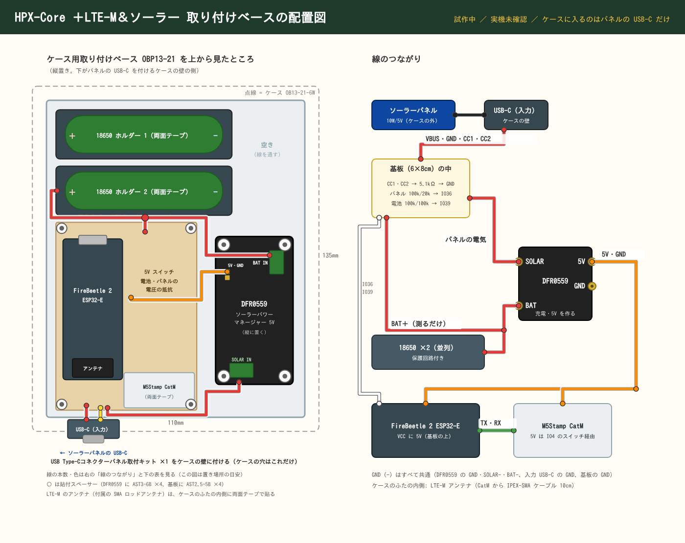
中の線（基板の穴は HPX-Core_LTES_pcb.png）
| 線の色（例） | どこから | どこへ | メモ |
|---|---|---|---|
| 赤 | 入力 USB-C の VBUS（＋） | 基板 D29（USB-C VBUS） | パネルの電気 |
| 黒 | 入力 USB-C の GND（−） | 基板 H33（USB-C GND） | |
| 黄 | 入力 USB-C の CC1・CC2 | 基板 B31（CC1）・E31（CC2） | 基板の 5.1kΩ で GND へ |
| 赤 | 基板 C29（→ SOLAR＋） | DFR0559 SOLAR IN ＋ | |
| 黒 | 基板 I33（→ SOLAR−） | DFR0559 SOLAR IN − | |
| 赤 | 18650 の＋（2本並列） | DFR0559 BAT IN ＋ | ホルダーのリード線をねじ端子へ |
| 黒 | 18650 の−（2本並列） | DFR0559 BAT IN − | |
| 赤 | DFR0559 BAT IN ＋ | 基板 N1（DFR0559 BAT＋） | 電池の電圧を測る分圧へ（細い線でよい） |
| 橙 | DFR0559 5V（ピン） | 基板 M13（DFR0559 5V） | FireBeetle の VCC と CatM のスイッチへ |
| 黒 | DFR0559 GND（ピン） | 基板 M15（DFR0559 GND） |
部品の使いどころ
| 部品 | 数 | 使うところ・メモ |
|---|---|---|
| ケース タカチ OB13-21-6W | 1 | ケースの壁にパネル用の USB-C を1つだけ付ける |
| ケース用取り付けベース タカチ OBP13-21（110×135mm） | 1 | 縦に置き、上から 18650 ホルダー、左下に基板、右下に DFR0559 |
| 18650 電池ホルダー 1本用（75×21mm） | 2 | 横向きにして上の方へ両面テープで貼る。2個を並列につなぐ |
| DFRobot DFR0559 ソーラーパワーマネージャー 5V（63×33mm） | 1 | 右下に縦に置き、四隅を AST3-6B で貼る |
| ユニバーサル基板 6×8cm | 1 | 左下に縦に置き、四隅を AST2.5-5B で貼る。FireBeetle・CatM・抵抗をまとめる |
| USB Type-Cコネクターパネル取付キット | 1 | ケースの壁（取り付けベースの下の方向）に付ける。パネルの入力用 |
| ナット入り貼付スペーサー AST3-6B ・ AST2.5-5B | 各4個 | DFR0559 に AST3-6B、基板に AST2.5-5B |
| ソーラーパネル 10W/5V（USB-C 出力） | 1 | ケーブルは切らずに入力の USB-C へ差す |
注意
- 試作中の図です。実機では確かめていません。取り付けベースの大きさ（110×135mm）は TARO さんの値、ほかの部品の大きさは秋月・DFRobot・M5Stack の値、DFR0559 の端子の位置は写真から描いた目安です。
- ケース OB13-21-6W の中の高さと、OBP13-21 のねじ穴・リブの位置は未確認です。部品を貼る前に、実物に置いて確かめます。
- LTE-M の通信と HPX-Solar (小型ソーラー電源) を 1つのケースに入れた版です。Solar から Core へは USB-C ケーブルを使わず、DFR0559 の 5V ピンから直接つなぎます。
- ファームウェアは HPX-Core v1.25 以降のまま使えます（電池＝IO39、パネル＝IO36 は HPX-Solar と同じ）。動作設定の「電圧の測り方」で「HPX-Solar」を、動作モードは「ディープスリープ」を選びます。
- FireBeetle の USB-C は上（18650 ホルダーの側）を向くので、書き込むときは FireBeetle をソケットから抜いて行います。
- LTE-M のアンテナは付属品を使います（技適）。ケースのふたの内側に貼り、電池や金属からなるべく離します。ケースの中で電波が弱いときは、防水のアンテナ中継（SMA）で外に出す方法もあります（ケースの穴が増えます）。
- 18650 は保護回路付きを使い、2本は同じ銘柄・同じ残量で並列にします。0℃以下では充電しないよう、日陰に置きます。
- DFR0559 の EN は使いません（5V はずっと出します）。何もつながないとき 5V が出るかは未確認です。
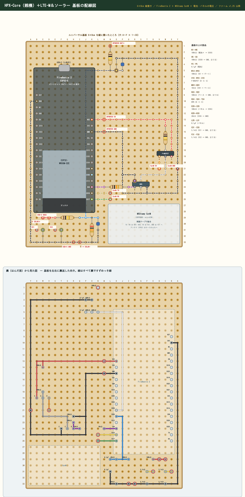
つなぐ線（穴の位置は 列の文字＋行の数字）
| 線 | どこから（穴） | 通る穴 | どこへ（穴） |
|---|---|---|---|
| 赤 | FireBeetle VCC（K13） | K13 → M13 → W13 → X13 → X19 | DFR0559 5V の線（M13）・P-MOSFET の S（X19） |
| 赤 | （とちゅうの W13） | W13 → W14 | 100kΩ（W14） |
| 黒 | FireBeetle GND（K15） | K15 → M15 → P15 → P22 → P25 → T25 → T24 | DFR0559 GND の線（M15）・NPN の E（T24） |
| 黒 | （とちゅうの P22） | P22 → R22 | 100kΩ（R22） |
| 黒 | （とちゅうの T25） | T25 → Y25 → Y21 | CatM GND の線（Y21） |
| 黒 | （Y21 から上へ） | Y21 → Y3 → P3 → O3 | 0.1µF（P3）・100kΩ（O3） |
| 白 | IO39（K21） | K21 → J21 → J5 → N5 → O5 → P5 | 100kΩ（N5）・100kΩ（O5）・0.1µF（P5） |
| 紫 | IO4（K24） | K24 → M24 | 10kΩ（M24） |
| 紫 | 10kΩ（Q24） | Q24 → R24 → R23 | NPN の B（R24）・100kΩ（R23） |
| gray | NPN の C（S24） | S24 → S22 → W22 → W19 → W18 | P-MOSFET の G（W19）・100kΩ（W18） |
| 橙 | P-MOSFET の D（V19） | V19 → V21 | CatM 5V の線（V21） |
| 黄 | IO16（K25、受信） | K25 → N25 | CatM TX の線（N25） |
| 緑 | IO17（K26、送信） | K26 → N26 | CatM RX の線（N26） |
| 青 | IO36（K22） | K22 → J22 → J29 → K29 → L29 | 100kΩ（I29 の先）・20kΩ（K29）・0.1µF（L29） |
| 青 | （とちゅうの J29） | J29 → I29 | 100kΩ（I29） |
| 黒 | FireBeetle GND（B10） | B10 → A10 → A33 → C33 → F33 → H33 → I33 → K33 → L33 → L31 | 5.1kΩ（C33・F33）・USB-C GND（H33）・SOLAR−（I33）・20kΩ（K33）・0.1µF（L31） |
| 赤 | → DFR0559 SOLAR＋（C29） | C29 → D29 → E29 | USB-C VBUS（D29）・100kΩ（E29） |
| 黄 | CC1（B31） | B31 → C31 | 5.1kΩ（C31） |
| 黄 | CC2（E31） | E31 → F31 | 5.1kΩ（F31） |
基板の外からの線
| 基板の外からの線（赤丸の穴） | どこから | メモ |
|---|---|---|
| D29（USB-C VBUS）・H33（USB-C GND） | ケースの壁の USB Type-Cコネクターパネル取付キット（入力）の VBUS・GND | ソーラーパネルの電気。D+・D− は使わない |
| B31（CC1）・E31（CC2） | 同じキットの CC1・CC2 | 5.1kΩ で GND へ（ないとパネルが 5V を出さないことがある） |
| C29（→ SOLAR＋）・I33（→ SOLAR−） | DFR0559 の SOLAR IN（ねじ端子）の ＋・− | パネルの電気を基板から DFR0559 へ渡す |
| N1（DFR0559 BAT＋） | DFR0559 の BAT IN ＋（18650 の＋と同じねじ端子） | 電池の電圧を測るだけ（電気はほとんど流れない） |
| M13（DFR0559 5V）・M15（DFR0559 GND） | DFR0559 の 5V・GND のピン | FireBeetle と CatM の電源 |
| N25・N26・V21・Y21 | M5Stamp CatM の TX・RX・5V・GND |
部品表（この基板の分）
| 部品 | 数 | 置き場所・メモ |
|---|---|---|
| DFRobot FireBeetle 2 ESP32-E（DFR0654、ピンヘッダ付き）＋ ピンソケット 18ピン・14ピン | 1 | B9〜B26・K13〜K26。USB-C を上に向ける（ESP32 のアンテナが下） |
| M5Stamp CatM（SIM7080G） | 1 | N27〜Y33 のあたりに両面テープで貼る。TX・RX・5V・GND を赤丸の穴へ短い線で |
| P-MOSFET（ロジックレベル、1A 以上） | 1 | V19・W19・X19（D・G・S）。足の並びは部品の資料で確かめて合わせる |
| NPN トランジスタ（2SC1815 など） | 1 | R24・S24・T24（B・C・E）。足の並びは部品の資料で確かめて合わせる |
| 金属皮膜抵抗 100kΩ | 5 | W14〜W18・R23・R22（スイッチ）、N1〜N5・O5・O3（電池）、E29〜I29（パネル） |
| 金属皮膜抵抗 20kΩ | 1 | K29〜K33（パネル） |
| 金属皮膜抵抗 10kΩ | 1 | M24〜Q24（IO4 → ベース） |
| 金属皮膜抵抗 5.1kΩ | 2 | C31・C33、F31・F33（入力 USB-C の CC1・CC2） |
| 積層セラミックコンデンサー 0.1µF | 2 | P3・P5（電池）、L29・L31（パネル） |
| ユニバーサル基板 6×8cm（穴 25×33）・すずめっき線 | 1 | 縦に置く。線はすべて裏。取り付けベースに AST2.5-5B で留める |
注意
- 上の図は部品を載せる面（表）から見たところ。部品はすべて表から差し、足を裏ではんだ付けする。線はすべて裏のすずめっき線。
- LTE-M の部品と、HPX-Solar の小さな基板（2*8）の部品を、この 1枚にまとめた。USB-C ケーブルと、ケースの壁の出力用 USB-C はいらない。
- 電源は DFR0559 の 5V ピンから直接 FireBeetle の VCC へ。CatM の 5V は IO4 が High のときだけ入る（NPN が P-MOSFET のゲートを GND へ引く）。
- 電池の電圧（100kΩ/100kΩ で 1/2）は IO39、パネルの電圧（100kΩ/20kΩ で 1/6）は IO36 で読む。HPX-Solar と同じピンなので、ファームはそのまま（v1.25 以降）。動作設定の「電圧の測り方」で「HPX-Solar」を選ぶ。
- FireBeetle の電池コネクタ（PH2.0）には何もつながない（18650 は DFR0559 につなぐ）。VCC に 5V を入れると、基板の中のスイッチを通って電池コネクタにも 5V が出る（回路図から）。
- FireBeetle に USB で書き込むときは、FireBeetle を基板から抜いてから（DFR0559 の 5V と USB の 5V がぶつからないように）。
- 裏の線どうしは交わらない（図を作るときに調べている）。FireBeetle の下を通る線（IO39・IO36・GND）は裏なので部品には触れない。
- M5Stamp CatM は基板に貼るだけで、穴には差さない。アンテナは付属の SMA ロッドアンテナを IPEX-SMA ケーブルでつなぎ、ケースのふたの内側に貼る（技適のため付属品を使う）。
- FireBeetle 2 の左右のピン列は 9穴離れている（TARO さん確認）。ピンの並びは DFRobot の資料から。差す前に、基板の印字とピンの名前を見くらべる。
組み立ての手順は、準備ができしだい掲載します。
機器の一覧へ戻る